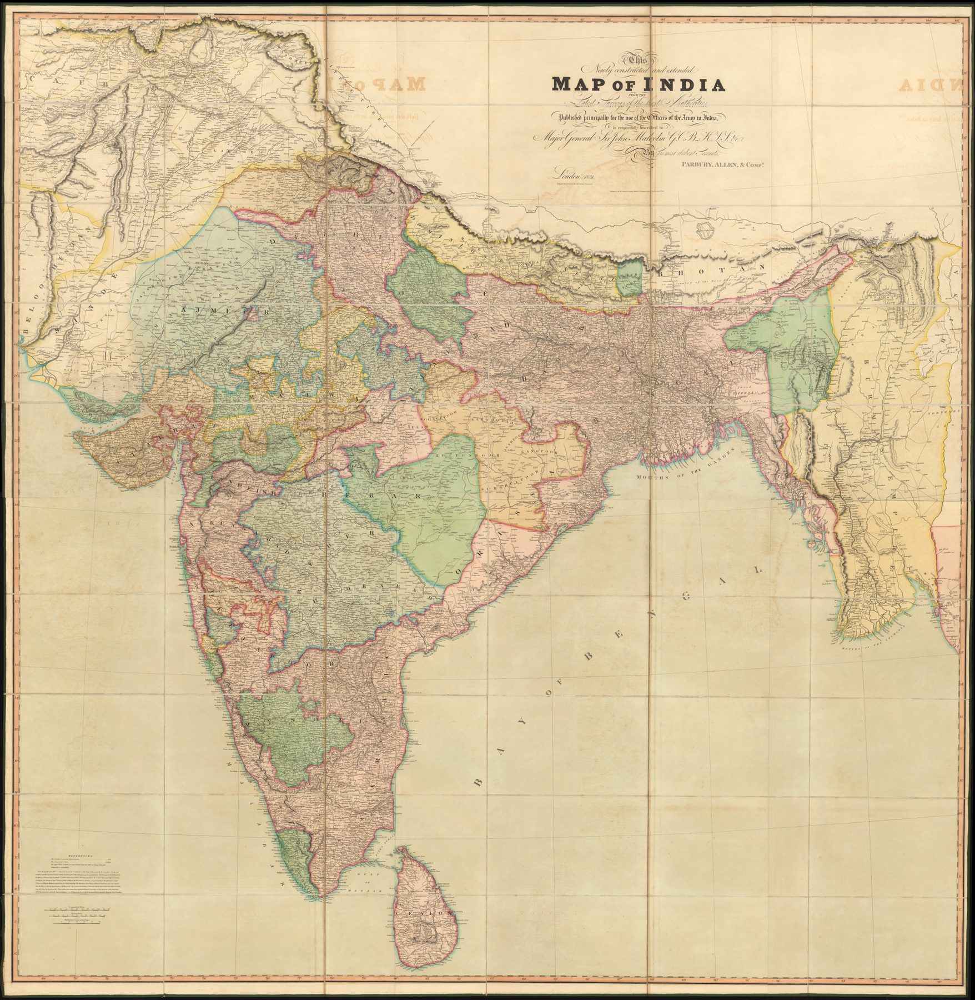

A map for officers
Published by Parbury, Allen & Co. and dedicated to Major-General Sir John Malcolm, the map announces that it was made principally for the use of officers of the army in India. At more than one and a half metres square, it brings together a growing body of Company route surveys and regional mapping at approximately 1:2,217,600.
Construction from ‘the best authorities’
The title’s language is precise: the map is newly constructed from surveys rather than itself being one continuous survey. Walker reconciled sources of different dates and quality into a general surface. The inset of the Burmese Empire, ‘compiled chiefly from native information’, briefly exposes one source of knowledge usually hidden by the finished map.
From survey office to garrison
Roads, passes, settlements and political divisions are arranged for practical consultation. The map joins scientific compilation to institutional use: information gathered through many surveys is delivered in a form suitable for planning movement, deployment and administration.
The gaze
Walker names his reader on the title. Dedicated to Malcolm and addressed to the officers of the army in India, the sheet states what most atlases leave to inference, and the Burmese inset, ‘compiled chiefly from native information’, shows what became of sources the compiler could not present as survey. The main map folds such admissions away; the inset keeps one of them in view.
In the Deccan timeline
The Nagar revolt and the Mysore Commission (1830–1831) · The inheritance of grants (1831)